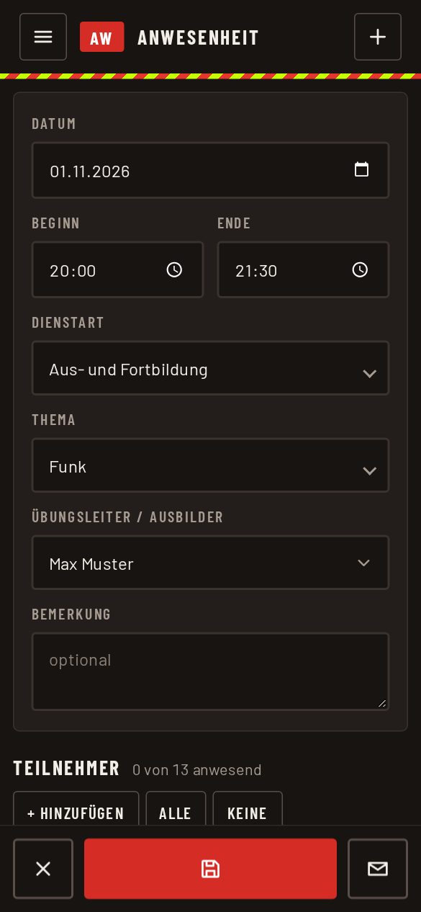
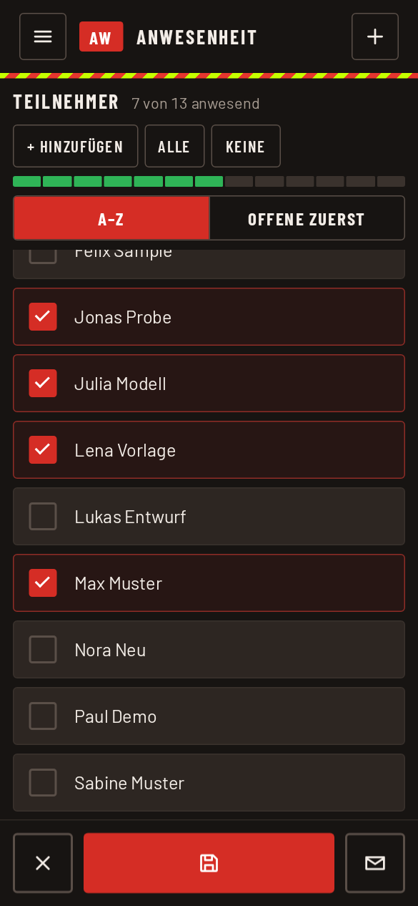
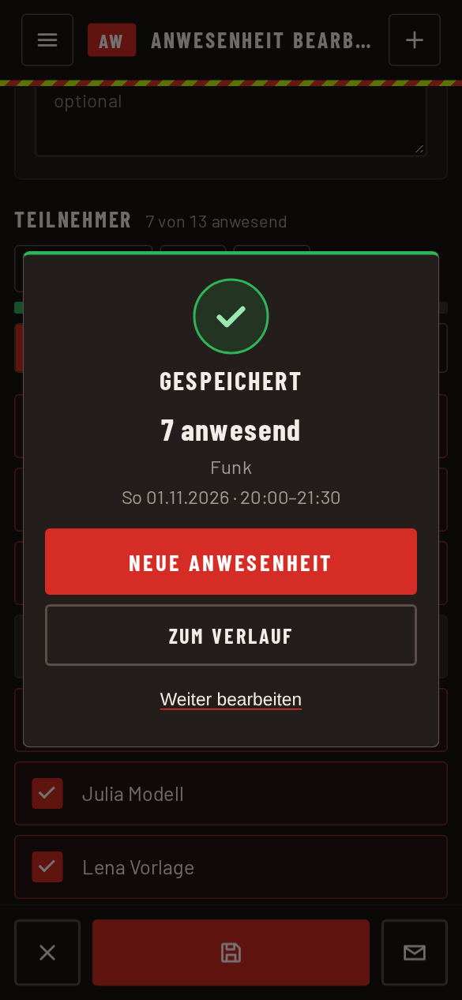

Anwesenheit erfassen
Für jeden Dienst, zum Beispiel einen Übungsabend, wird ein Termin mit den anwesenden Personen gespeichert. Reine Erfasser landen nach der Anmeldung direkt in dieser Ansicht.
Termin anlegen
- Im Menü „Anwesenheit erfassen“ wählen oder oben rechts auf das Plus tippen. Das Formular ist leer und bereit.
- Falls ihr für mehrere Abteilungen berechtigt seid, steht ganz oben „Abteilung“. Sie bestimmt Teilnehmerliste, Themen und die Vorbelegung der Zeiten, deshalb zuerst wählen.
- Datum, Beginn und Ende prüfen. Heute und die übliche Zeit der Abteilung sind schon eingetragen.
- Dienstart und Thema wählen. Beides ist Pflicht.
- Bei Übungsleiter / Ausbilder den Namen eintragen oder aus der Liste wählen. Bemerkung ist freiwillig.

Anwesende ankreuzen
Unter „Teilnehmer“ steht die Liste der Abteilung. Oben zeigt eine Zahl, wie viele von wie vielen anwesend sind.
- Das Kästchen links antippen, um jemanden als anwesend zu markieren.
- Mit „Alle“ setzt ihr bei allen einen Haken, mit „Keine“ entfernt ihr alle. Danach nur die Ausnahmen ändern.
- „A–Z“ sortiert nach Namen. „Offene zuerst“ zeigt zuerst alle, die noch nicht angekreuzt sind. Angekreuzte rutschen darunter.
- Den Namen antippen, um eine Bemerkung zur Person zu schreiben oder Zusatzinfos zu setzen. Ein Punkt am Zeilenende zeigt, dass dort etwas hinterlegt ist. Mit „Fertig“ schließt ihr das Blatt.
- Mit „+ Hinzufügen“ nehmt ihr jemanden dazu, der nicht in der Liste steht, zum Beispiel einen Gast oder eine Aushilfe. Gesucht wird in allen hinterlegten Personen.

Speichern
Unten auf Speichern tippen. Danach erscheint „Gespeichert“ mit der Zahl der Anwesenden. Von dort geht es mit „Neue Anwesenheit“ zum nächsten Termin, mit „Zum Verlauf“ zur Liste oder mit „Weiter bearbeiten“ zurück ins Formular.

Weitere Knöpfe in der Leiste unten:
- Schließen (links) verwirft die offene Eingabe und öffnet ein leeres Formular.
- E-Mail (rechts) öffnet eine vorbereitete Nachricht mit Termin und Namen der Anwesenden. Ihr wählt in eurem Mailprogramm den Empfänger.
Hinweis: Ein gespeicherter Termin lässt sich später ändern. Dazu im Menü „Vorherige Anwesenheiten“ öffnen und beim Termin auf den Stift tippen. Dort speichert ihr erneut mit demselben Knopf.
Wenn etwas fehlt
- Eine Person fehlt in der Liste: Sie gehört nicht zur gewählten Abteilung. Über „+ Hinzufügen“ ergänzen oder die Abteilung wechseln. Ist sie gar nicht angelegt, bittet ihr den Abteilungsadmin um Eintrag (siehe Personen verwalten).
- Ein Thema fehlt: Themen pflegt der Abteilungsadmin (siehe Themen und Dienstarten).